Who is well in the clinic, who is labelled ill, and where does infant death still sit on the map? Both panels together show who in the clinic is labelled ill: how heart disease splits across sex and chest-pain type, and whether high blood sugar and exercise-induced angina go together more than chance would predict.
Introduction — the tables we own
Panel A (panel-A.csv) — clinic measurements: age, blood pressure, cholesterol, maximum heart rate, plus sex and heart-disease label for grouping.
Panel B (panel-B.csv) — the same people, Quals only: chest pain, blood sugar flag, exercise angina, heart disease.
Panel C (panel-C.csv) — infant mortality by country. No geometry in the file; we join to a world map in R.
A does not grow a mosaic. B does not grow a honest histogram of chest pain. C is a rate, not a headcount.
We load from this folder:
Found tables train the mark. A campus Free Hunch, if we collect one, is a made panel of the same pair type — new people, old grammar. It does not replace A, B, or C.
library(ggplot2)library(systemfonts)## Clean the slatesystemfonts::clear_local_fonts()
Run `scan_local_fonts()` in order to re-add automatically added fonts
systemfonts::clear_registry()# Add three Google Fonts# Arguments: font family name, Google Font namefont_add_google("Roboto Condensed", "Roboto Condensed")font_add_google("Lato", "Lato")font_add_google("Alegreya", "Alegreya")font_add_google("Montserrat", "Montserrat")# Tell R to use showtext for all subsequent plotsshowtext_auto()# Optional: set DPI for raster devices (adjust if you need high-res PNGs)showtext_opts(dpi =300)# Set a site-wide ggplot theme using the loaded fontsggplot2::theme_set( ggplot2::theme_bw(base_size =14,base_family ="Roboto Condensed" ))## Set the ggplot themetheme_madhatter <-function(){ theme_bw(base_size =10) +# Base Theme, Black-Whitetheme_sub_axis(title =element_text(family ="Roboto Condensed", size =8),text =element_text(family ="Roboto Condensed", size =6)) +theme_sub_legend(text =element_text(family ="Roboto Condensed", size =6),title =element_text(family ="Alegreya", size =8)) +theme_sub_plot(title =element_text(family ="Alegreya", size =14, face ="bold"),title.position ="plot",subtitle =element_text(family ="Montserrat", size =10),caption =element_text(family ="Alegreya", size =6),caption.position ="plot")}## Set the theme for all plotsggplot2::theme_set(theme_madhatter())## Update the fonts for geoms as well!## Use available fonts in ggplot label and text within the ggplot geoms ggplot2::update_geom_defaults(geom ="text", new =list(family ="Roboto Condensed",face ="plain",size =8/ggplot2::.pt, # Converting 8 points to "mm" defaultcolor ="#2b2b2b"))ggplot2::update_geom_defaults(geom ="label", new =list(family ="Roboto Condensed",face ="plain",size =8/ggplot2::.pt, # Converting 8 points to "mm" defaultcolor ="#2b2b2b"))
library(tidyverse)
── Attaching core tidyverse packages ──────────────────────── tidyverse 2.0.0 ──
✔ dplyr 1.2.1 ✔ readr 2.2.0
✔ forcats 1.0.1 ✔ stringr 1.6.0
✔ lubridate 1.9.5 ✔ tibble 3.3.1
✔ purrr 1.2.2 ✔ tidyr 1.3.2
── Conflicts ────────────────────────────────────────── tidyverse_conflicts() ──
✖ dplyr::filter() masks stats::filter()
✖ dplyr::lag() masks stats::lag()
ℹ Use the conflicted package (<http://conflicted.r-lib.org/>) to force all conflicts to become errors
library(skimr)library(mosaic)
Registered S3 method overwritten by 'mosaic':
method from
fortify.SpatialPolygonsDataFrame ggplot2
The 'mosaic' package masks several functions from core packages in order to add
additional features. The original behavior of these functions should not be affected by this.
Attaching package: 'mosaic'
The following object is masked from 'package:Matrix':
mean
The following object is masked from 'package:skimr':
n_missing
The following objects are masked from 'package:dplyr':
count, do, tally
The following object is masked from 'package:purrr':
cross
The following object is masked from 'package:ggplot2':
stat
The following objects are masked from 'package:stats':
binom.test, cor, cor.test, cov, fivenum, IQR, median, prop.test,
quantile, sd, t.test, var
The following objects are masked from 'package:base':
max, mean, min, prod, range, sample, sum
Attaching package: 'htmltools'
The following object is masked from 'package:marquee':
em
library(maps)
Attaching package: 'maps'
The following object is masked from 'package:purrr':
map
library(readr)
Panel A — body / measure
Age, BP, Cholesterol, MaximumHR are Quant. Sex and HeartDisease are Quals used to split* the Quants.*
myPanelAData <-read_csv(file ="dta/panel-A.csv")
Rows: 303 Columns: 6
── Column specification ────────────────────────────────────────────────────────
Delimiter: ","
chr (2): Sex, HeartDisease
dbl (4): Age, BP, Cholesterol, MaximumHR
ℹ Use `spec()` to retrieve the full column specification for this data.
ℹ Specify the column types or set `show_col_types = FALSE` to quiet this message.
1. See the table
What is a case? Which columns are Quant / Qual? What is missing?
The Qualitative variable in this table entail - HeartDisease and Sex(These were character variables which were mutated to factor variables).
the quantitative variables in this table are - Age, BP, Cholestrol, MaximumHR.
A few piecies of data missing here are the fatality rate and the fact that casuality cannot be proved since this is not an RCT data set.
Rows: 303
Columns: 6
$ Age <dbl> 63, 67, 67, 37, 41, 56, 62, 57, 63, 53, 57, 56, 56, 44, 5…
$ Sex <fct> Male, Male, Male, Male, Female, Male, Female, Female, Mal…
$ BP <dbl> 145, 160, 120, 130, 130, 120, 140, 120, 130, 140, 140, 14…
$ Cholesterol <dbl> 233, 286, 229, 250, 204, 236, 268, 354, 254, 203, 192, 29…
$ MaximumHR <dbl> 150, 108, 129, 187, 172, 178, 160, 163, 147, 155, 148, 15…
$ HeartDisease <fct> No, Yes, Yes, No, No, No, Yes, No, Yes, Yes, No, No, Yes,…
2. Ask
One question this table can answer. One it cannot. Write both.
Question can answer: 1.How does cholestrol affect different sex? 2.Based on sex and age how does the maximum Heartrate fluctuate? 3.How does the age distribution of people with and without heart disease differ in this dataset? 4.how does the number of men and women having BP vary over the years?
Questions it cannot answer:
1.For what % of the population is cholestrol the reason for heart disease? 2.Does sex itself influence a person’s maximum heart rate, or are the differences in maximum heart rate actually related to other factors such as age or health?
3. Choose a mark
Questions that can be answered:
myPanelAData |>gf_boxplot(~ Cholesterol, bins =50, fill =~ Sex, title ="Distribution of Cholesterol Levels", subtitle ="Comparing cholesterol levels across sexes", caption ="Source: Panel A dataset")
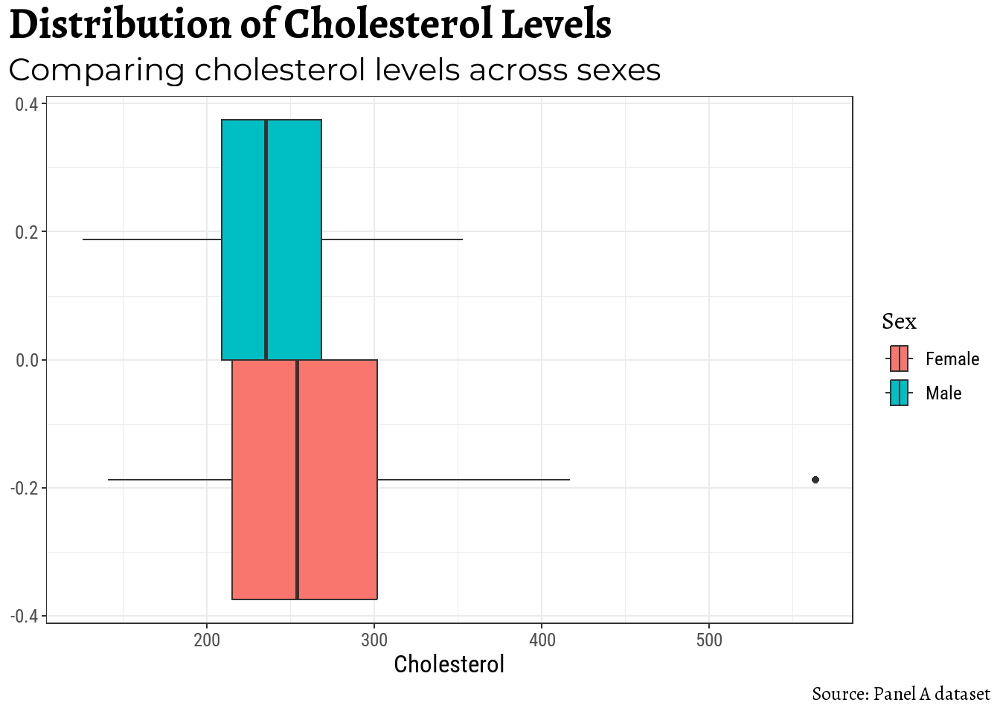
myPanelAData |>gf_point(MaximumHR~Age, color =~Sex) |>gf_smooth(method ="lm") |>gf_density_2d()
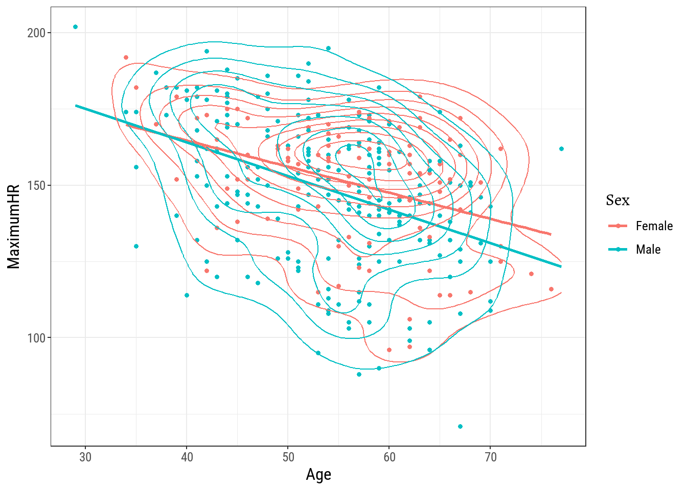
myPanelAData |>gf_boxplot(Age ~ HeartDisease)
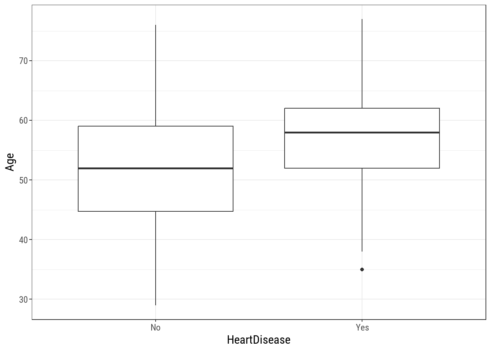
myPanelAMod |>gf_line(BP ~ Age,bins=100, color =~Sex)
# A tibble: 2 × 2
Sex mean_BP
<chr> <dbl>
1 Female 133.
2 Male 131.
mosaic::t_test(MaximumHR ~ Sex, data = myPanelAData)
Welch Two Sample t-test
data: MaximumHR by Sex
t = 0.90442, df = 223.85, p-value = 0.3667
alternative hypothesis: true difference in means between group Female and group Male is not equal to 0
95 percent confidence interval:
-2.808276 7.572564
sample estimates:
mean in group Female mean in group Male
151.2268 148.8447
mosaic::t_test(Cholesterol ~ Sex, data = myPanelAData)
Welch Two Sample t-test
data: Cholesterol by Sex
t = 3.0643, df = 136.37, p-value = 0.002631
alternative hypothesis: true difference in means between group Female and group Male is not equal to 0
95 percent confidence interval:
7.855795 36.445477
sample estimates:
mean in group Female mean in group Male
261.7526 239.6019
mosaic::t_test(BP ~ Sex, data = myPanelAData)
Welch Two Sample t-test
data: BP by Sex
t = 1.0622, df = 165.36, p-value = 0.2897
alternative hypothesis: true difference in means between group Female and group Male is not equal to 0
95 percent confidence interval:
-2.084686 6.939856
sample estimates:
mean in group Female mean in group Male
133.3402 130.9126
4. Predict: What do we think we will see?
We predict that age, sex, blood pressure, and cholesterol will show noticeable differences in maximum heart rate and heart disease.
5. Say
Title: Age and sex show different patterns in heart health measures.
Caption: The graphs show how age, sex, blood pressure, cholesterol, maximum heart rate, and heart disease are distributed and related across the sample.
One sentence we will stand behind: The data shows differences between groups, but these patterns do not prove that one factor causes heart disease.
6. Limit
What this panel cannot do. Which kit table we refused to abuse.
The data available to us in this panel cannot prove dependency in terms of causality between two or more variables.
Panel B — category / talk
ChestPain, Sex, HeartDisease, ExerciseInducedAngina. Mosaic or stacked bar. No mean of ChestPain.
myPanelBData <-read_csv(file ="dta/panel-B.csv")
Rows: 303 Columns: 5
── Column specification ────────────────────────────────────────────────────────
Delimiter: ","
chr (4): Sex, ChestPain, ExerciseInducedAngina, HeartDisease
lgl (1): BloodSugar
ℹ Use `spec()` to retrieve the full column specification for this data.
ℹ Specify the column types or set `show_col_types = FALSE` to quiet this message.
1. See the table
What is a case? Which columns are Quant / Qual? What is missing?
Rows: 303
Columns: 5
$ Sex <fct> Male, Male, Male, Male, Female, Male, Female, Fe…
$ ChestPain <fct> Typical angina, Asymptomatic, Asymptomatic, Non-…
$ BloodSugar <lgl> TRUE, FALSE, FALSE, FALSE, FALSE, FALSE, FALSE, …
$ ExerciseInducedAngina <fct> No, Yes, Yes, No, No, No, No, Yes, No, Yes, No, …
$ HeartDisease <fct> No, Yes, Yes, No, No, No, Yes, No, Yes, Yes, No,…
2. Ask
One question this table can answer. One it cannot. Write both.
Question can answer: 1. What part of the population posses both blood sugar and Heart Disease? 2. How does the proportion of people with heart disease differ across different chest pain types? 3. How does the distribution of exercise-induced angina differ between males and females?
Questions it cannot answer: 1.How often does exercise-induced angina cause chest pain among man and women? 2.Why do certain chest pain types have higher rates of heart disease? 3.What factors are responsible for certain people having heart disease?
3. Choose a mark
Questions that can be answered:
myPanelBData |>ggplot(aes(x = BloodSugar, fill = HeartDisease)) +geom_bar() +labs(x ="Blood Sugar", y ="Number of People")
A high p-value means that we do not have sufficient evidence to reject the null hypothesis of independence. It does not prove that the variables are independent.
Chest Pain and Exercise-Induced Angina
A low p-value provides evidence against the null hypothesis of independence, suggesting an association between the variables. It does not prove that one variable causes the other.
The conclusions should be based on the actual p-values from the statistical tests.
4. Predict:What do we think we will see? One sentence.
We predict that heart disease will be more common among people with certain chest pain types, exercise-induced angina, and high blood sugar.
5. Say
Title: Heart disease shows different patterns across several health-related factors.
Caption: The graphs compare heart disease with chest pain, blood sugar, exercise-induced angina, and sex to identify patterns within the sample.
One sentence we will stand behind: The data shows associations between heart disease and these factors, but it cannot tell us what causes heart disease.
6. Limit
What this panel cannot do: This panel can show associations between the variables, but it cannot explain why these patterns occur or prove that one factor causes heart disease.
Which kit table we refused to abuse: The contingency table.
Panel C — place
Join country to rnaturalearth / tmap::World. Fill is infant mortality (a rate).
myPanelCData <-read_csv(file ="dta/panel-C.csv")
Rows: 142 Columns: 6
── Column specification ────────────────────────────────────────────────────────
Delimiter: ","
chr (2): country, continent
dbl (4): year, lifeExp, pop, gdpPercap
ℹ Use `spec()` to retrieve the full column specification for this data.
ℹ Specify the column types or set `show_col_types = FALSE` to quiet this message.
Geometry is not in the CSV. Join in R, then use the same seven headings.
# library(sf)# library(rnaturalearth)# world <- ne_countries(scale = "medium", returnclass = "sf")# # join on country name; list the unmatched labels
1. See the table
What is a case? Which columns are Quant / Qual? What is missing?
categorical variables:
name class levels n missing
1 country character 142 142 0
2 continent character 5 142 0
distribution
1 Afghanistan (0.7%), Albania (0.7%) ...
2 Africa (36.6%), Asia (23.2%) ...
quantitative variables:
name class min Q1 median Q3
1 year numeric 2007.0000 2.007000e+03 2.007000e+03 2.007000e+03
2 lifeExp numeric 39.6130 5.716025e+01 7.193550e+01 7.641325e+01
3 pop numeric 199579.0000 4.508034e+06 1.051753e+07 3.121004e+07
4 gdpPercap numeric 277.5519 1.624842e+03 6.124371e+03 1.800884e+04
max mean sd n missing
1 2.007000e+03 2.007000e+03 0.000000e+00 142 0
2 8.260300e+01 6.700742e+01 1.207302e+01 142 0
3 1.318683e+09 4.402122e+07 1.476214e+08 142 0
4 4.935719e+04 1.168007e+04 1.285994e+04 142 0
myPanelCData <-read_csv("dta/panel-C.csv")
Rows: 142 Columns: 6
── Column specification ────────────────────────────────────────────────────────
Delimiter: ","
chr (2): country, continent
dbl (4): year, lifeExp, pop, gdpPercap
ℹ Use `spec()` to retrieve the full column specification for this data.
ℹ Specify the column types or set `show_col_types = FALSE` to quiet this message.
world_C <-ne_countries(scale ="medium",returnclass ="sf") |>left_join(myPanelCData, by =c("name"="country"))world_map <-map_data("world")world_map_C <- world_map |>left_join( world_C |> sf::st_drop_geometry(),by =c("region"="name") )ggplot(world_map_C) +geom_polygon(aes(x = long,y = lat,group = group,fill = lifeExp ),color ="white",linewidth =0.1 ) +scale_fill_viridis_c(na.value ="grey85") +labs(title ="Life Expectancy Around the World",subtitle ="Comparing life expectancy across countries",fill ="Life expectancy (years)",caption ="Source: Panel C dataset" ) +coord_fixed(1.3) +theme_minimal()
One question this table can answer. One it cannot. Write both.
Questions it can answer: 1. Which continents have the highest GDP per capita? 2. Which continents have the largest total populations? 3. Does life expectancy vary across continents? 4. do countries around the world differ in life expectancy, population, and GDP per capita in 2007? 5. Is higher GDP per capita associated with higher life expectancy? 6. Do countries with larger populations tend to have lower life expectancy?
Questions it cannot answer: 1. Has GDP per capita changed over the years? 2. Has life expectancy improved over the years? 3. Does having a higher GDP per capita cause people to live longer?
3. Choose a mark
Geom, map mark, or (later) test that matches the pair type. Name it before you code.
world_C <-ne_countries(scale ="medium", returnclass ="sf") |>left_join(myPanelCData, by =c("name"="country"))
gf_polygon( lat ~ long,data = world_map_C,group =~group,fill =~lifeExp) +scale_fill_viridis_c(na.value ="grey85") +labs(title ="Life Expectancy Around the World",subtitle ="Comparing life expectancy across countries in 2007",caption ="Source: Panel C dataset, 2007.",fill ="Life expectancy (years)" ) +theme_minimal()
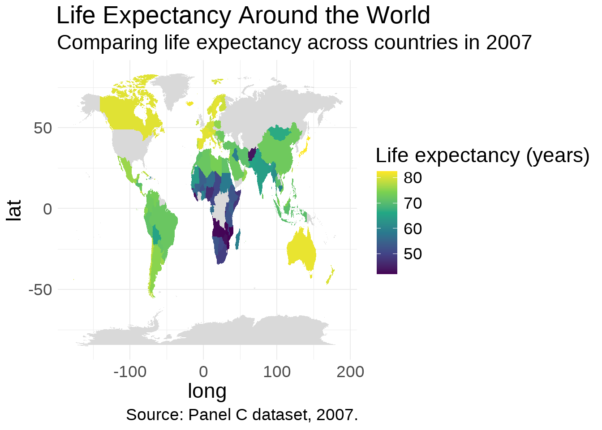
gf_polygon( lat ~ long,data = world_map_C,group =~group,fill =~log10(pop)) +scale_fill_viridis_c(na.value ="grey85") +labs(title ="Population Around the World",subtitle ="Comparing country populations in 2007",caption ="Source: Panel C dataset, 2007.",fill ="Population (log10 scale)" ) +theme_minimal()
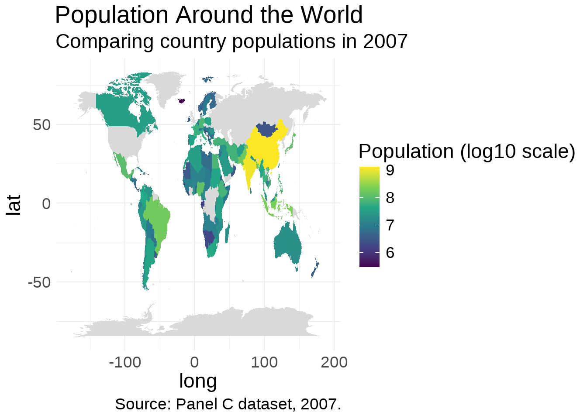
gf_polygon( lat ~ long,data = world_map_C,group =~group,fill =~gdpPercap) +scale_fill_viridis_c(na.value ="grey85") +labs(title ="GDP per Capita Around the World",subtitle ="Comparing GDP per person across countries in 2007",caption ="Source: Panel C dataset, 2007.",fill ="GDP per capita" ) +theme_minimal()
Warning: st_centroid assumes attributes are constant over geometries
ggplot() +geom_sf(data = world_C, fill ="grey95") +geom_sf(data = world_points,aes(size = pop, color = lifeExp),alpha =0.85 ) +scale_size_area(max_size =10) +scale_color_viridis_c() +labs(title ="Population and Life Expectancy",subtitle ="Comparing population size and life expectancy across countries",caption ="Source: Panel C dataset, 2007",size ="Population",color ="Life expectancy (years)" ) +theme_minimal()
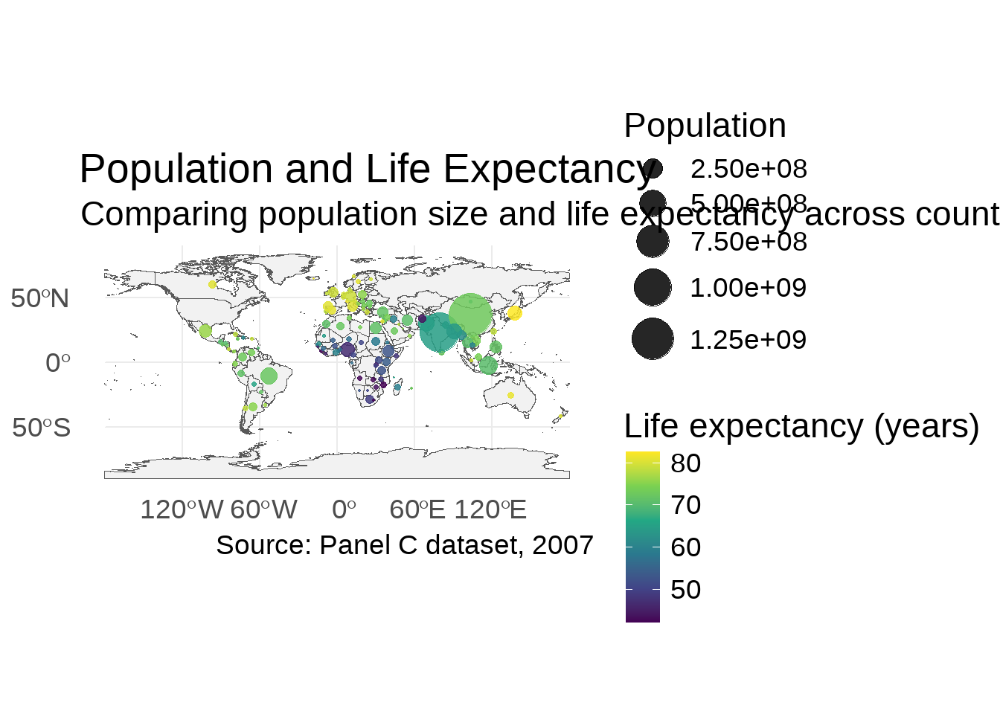
myPanelCData |>gf_boxplot(gdpPercap ~ continent)
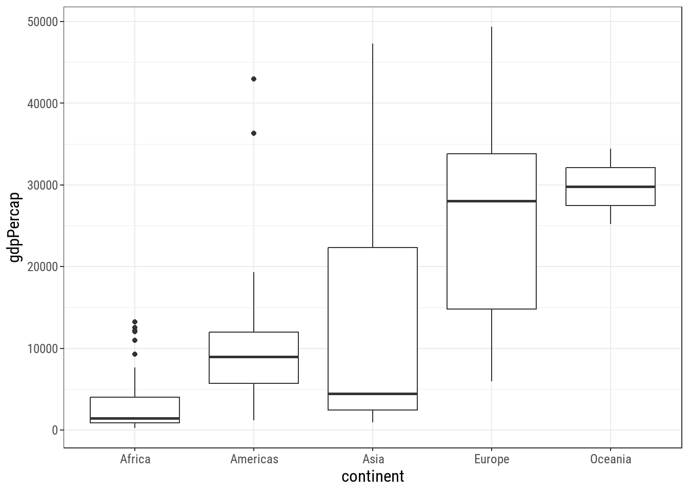
myPanelCData |>gf_point(lifeExp ~ gdpPercap, color =~ continent)
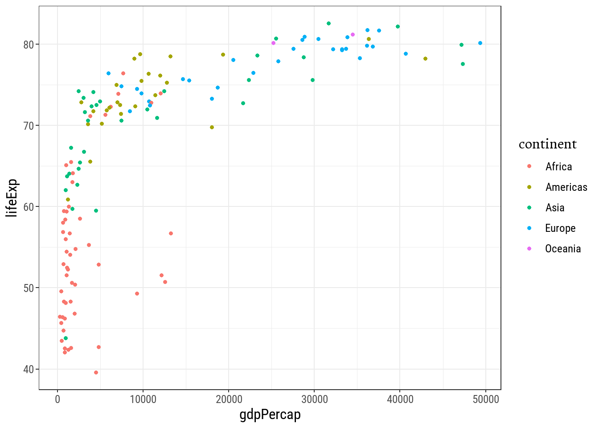
myPanelCData |>gf_boxplot(lifeExp ~ continent)
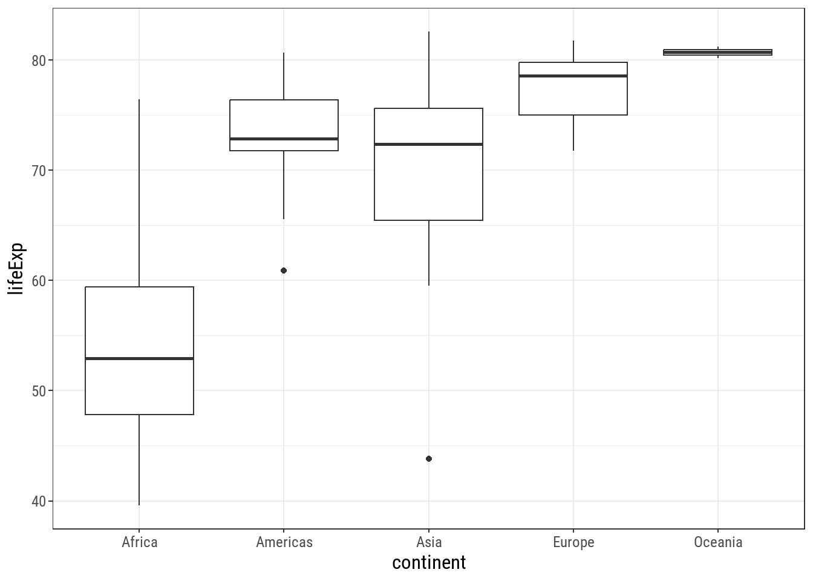
4. Predict
What do we think we will see? One sentence, before Run.
We predict that GDP per capita, population, and life expectancy will vary across continents, and that countries with higher GDP per capita will generally have higher life expectancy, while both GDP per capita and life expectancy may show changes over time.
6. Say
Title: GDP per Capita, Population, and Life Expectancy Reveal Differences Across Countries
Caption: Source: Panel C dataset, Gapminder.
One sentence we can stand behind: The data shows differences in GDP per capita, population, and life expectancy across countries and continents, with higher GDP per capita generally associated with higher life expectancy, although this relationship does not establish causation.
7. Limit
What this panel cannot do: Panel C cannot establish that higher GDP per capita causes longer life expectancy, explain why population sizes differ across countries, or determine what factors are responsible for changes in GDP per capita and life expectancy over time.
Kit we refused to abuse: We did not use the dataset to make causal claims because it shows relationships and patterns, not proof of cause and effect.
Conclusion
Across our three panels, we explored patterns in health, categorical variables, and differences between countries. We used boxplots, bar charts, scatterplots, and maps to understand how variables relate to one another.
The question we will defend in ninety seconds How can data visualisation help us identify patterns without assuming that one variable causes another?
What we will not claim We will not claim that association proves causation or that our findings apply to everyone. Our graphs show patterns in the available data, not the complete reasons behind them.
Which lines were human, which were machine We chose the questions and interpreted the patterns as a group, while R and its packages helped us create graphs, conduct statistical tests, and present the data. The tools helped with the process, but interpreting the results required our own judgement.
Limits: sample, missingness, the test we did not run Our conclusions are limited by the available variables, missing information, and the scope of the datasets. We also need to be careful with geographical joins and avoid making claims that we have not tested statistically.
Gift for the steal-this strip (palette, annotation, join trick) Creating a reusable theme for fonts and colours helped us keep our graphs consistent. We also learned that joining geographical data requires checking country names and unmatched locations.
Overall, we learned that a good graph is not just about appearance. It should answer a meaningful question, represent the data honestly, and make its limitations clear.
# sessionInfo()
Panel D
Hinkley, California, An environmental investigation inspired by Erin Brockovich
The contamination of groundwater in Hinkley reveals how an industrial site can become connected to the everyday lives of a community through something that is largely invisible: the water beneath the ground.
This panel examines the spatial relationship between the PG&E Hinkley Compressor Station and the nearby community, alongside research into historical chromium discharges, groundwater monitoring and remediation.
The map establishes the geographical context of the case. Supporting research records document the contamination issue and identify sources for further investigation. Together, they distinguish between the locations we can map and the wider environmental story that requires documentary evidence.
1. See the table
panelDData <-read_csv("panel-D.csv",show_col_types =FALSE, na =c("", "NA"))panelDMapData <- panelDData |>filter(!is.na(latitude),!is.na(longitude))glimpse(panelDData)
Rows: 12
Columns: 9
$ id <chr> "SITE-01", "COMM-01", "CONTEXT-01", "CONTEXT-02", "CON…
$ name <chr> "PG&E Hinkley Compressor Station", "Hinkley Community …
$ latitude <dbl> 34.93274, 34.93300, NA, NA, NA, NA, NA, NA, NA, NA, NA…
$ longitude <dbl> -117.1645, -117.2000, NA, NA, NA, NA, NA, NA, NA, NA, …
$ feature_type <chr> "Facility", "Community", "Research context", "Research…
$ map_label <chr> "PG&E facility", "Hinkley community", "Groundwater plu…
$ description <chr> "Compressor station associated with historical chromiu…
$ evidence_status <chr> "Approximate coordinates from the supplied reference s…
$ source <chr> "California State Water Resources Control Board, PG&E …
The map establishes the geographical relationship between the PG&E Hinkley Compressor Station and the Hinkley community. These locations provide a starting point for understanding the environmental case, but their proximity alone does not establish the extent of contamination or the exposure of any individual household.
Historical chromium-bearing wastewater discharges from the compressor station affected groundwater. The contamination and its remediation have since been the subject of monitoring and regulatory oversight. The case demonstrates why groundwater contamination cannot be understood through visible surface geography alone: information about water quality, groundwater movement and monitoring is also essential.
The map therefore distinguishes between geographical reference points and the wider environmental evidence. The official plume maps and groundwater monitoring records are necessary to investigate the contamination’s extent and changes over time.
Limitations
The coordinates shown are approximate reference locations, not survey-grade measurements. The map does not contain individual household locations, groundwater monitoring-well measurements or a verified contamination boundary. It should not be interpreted as a map of confirmed exposure or current contamination levels.
Research Sources
California State Water Resources Control Board, PG&E Hinkley Chromium Cleanup.
United States Geological Survey, Natural and Anthropogenic Hexavalent Chromium in Groundwater near a Mapped Plume, Hinkley, California.
The map provides geographical context; the official records provide the evidence needed to investigate the environmental conditions.
Panel E.1
Friends vs Modern Family vs House vs Big Bang Theory vs… BAH!!
Rows: 69 Columns: 4
── Column specification ────────────────────────────────────────────────────────
Delimiter: ","
chr (3): Friends, House, Modern Family
dbl (1): Students
ℹ Use `spec()` to retrieve the full column specification for this data.
ℹ Specify the column types or set `show_col_types = FALSE` to quiet this message.
categorical variables:
name class levels n missing
1 friends character 10 69 0
2 house character 10 69 0
3 modern_family character 8 69 0
distribution
1 7/10 (30.4%), 8/10 (21.7%) ...
2 N/A (55.1%), 8/10 (14.5%) ...
3 N/A (21.7%), 9/10 (20.3%) ...
quantitative variables:
name class min Q1 median Q3 max mean sd n missing
1 students numeric 1 18 35 52 70 35.17391 20.31513 69 0
skim(MypanelE1Data)
Data summary
Name
MypanelE1Data
Number of rows
69
Number of columns
4
_______________________
Column type frequency:
character
3
numeric
1
________________________
Group variables
None
Variable type: character
skim_variable
n_missing
complete_rate
min
max
empty
n_unique
whitespace
friends
0
1
3
5
0
10
0
house
0
1
3
5
0
10
0
modern_family
0
1
1
5
0
8
0
Variable type: numeric
skim_variable
n_missing
complete_rate
mean
sd
p0
p25
p50
p75
p100
hist
students
0
1
35.17
20.32
1
18
35
52
70
▇▇▇▇▇
MypanelE1Mod <- MypanelE1Data |> dplyr::mutate(friends =as.factor(friends), house =as.factor(house),modern_family =as.factor(modern_family))glimpse(MypanelE1Mod)
Warning: There was 1 warning in `dplyr::mutate()`.
ℹ In argument: `scores = readr::parse_number(as.character(scores))`.
Caused by warning:
! 68 parsing failures.
row col expected actual
2 -- a number N/A
5 -- a number N/A
6 -- a number N/A
8 -- a number N/A
10 -- a number N/A
... ... ........ ......
See problems(...) for more details.
# A tibble: 3 × 2
show mean_score
<chr> <dbl>
1 friends 7.25
2 house 6.58
3 modern_family 8.11
ggformula::gf_col(mean_score ~ show,fill =~show, data = myPanelE1Mean) |>gf_labs( title ="Modern Family Has the Highest Average Rating",subtitle ="Average ratings given by students out of 10",x ="TV Show",y ="Average Rating",caption ="Based on ratings provided by students in the dataset." )
aov(scores ~ show, data = MypanelE1Long) |>summary()
Df Sum Sq Mean Sq F value Pr(>F)
show 2 48.8 24.398 8.436 0.000352 ***
Residuals 136 393.3 2.892
---
Signif. codes: 0 '***' 0.001 '**' 0.01 '*' 0.05 '.' 0.1 ' ' 1
68 observations deleted due to missingness
Conclusion
Overall, Modern Family received the highest average rating, followed by Friends and House. This suggests that Modern Family was the most highly rated of the three shows among the students who responded. However, the number of ratings varied between shows, and the results represent only the students in this dataset. The analysis helps compare their ratings, but it cannot explain why students preferred one show over another.
Panel E.2
Are SMI students more introverted than MIT students?
Rows: 60 Columns: 4
── Column specification ────────────────────────────────────────────────────────
Delimiter: ","
chr (3): department, mbti-type, social-orientation
dbl (1): sno
ℹ Use `spec()` to retrieve the full column specification for this data.
ℹ Specify the column types or set `show_col_types = FALSE` to quiet this message.
categorical variables:
name class levels n missing
1 department character 2 60 0
2 mbti_type character 14 60 0
3 social_orientation character 2 60 0
distribution
1 SMI (51.7%), MIT (48.3%)
2 INFP (15%), INTJ (11.7%) ...
3 I (56.7%), E (43.3%)
quantitative variables:
name class min Q1 median Q3 max mean sd n missing
1 sno numeric 1 15.75 30.5 45.25 60 30.5 17.46425 60 0
Rows: 60
Columns: 4
$ sno <dbl> 1, 2, 3, 4, 5, 6, 7, 8, 9, 10, 11, 12, 13, 14, 15, …
$ department <fct> SMI, SMI, SMI, SMI, SMI, SMI, SMI, SMI, SMI, SMI, S…
$ mbti_type <fct> ENTP, INTJ, INFP, INTP, INFP, INFP, ISFP, INFJ, INF…
$ social_orientation <fct> E, I, I, I, I, I, I, I, I, E, E, E, I, E, I, E, E, …
mosaic::xchisq.test(`social_orientation`~ department, data = MypanelE2Mod)
MypanelE2Mod |>gf_bar(~`mbti_type`, fill =~department)
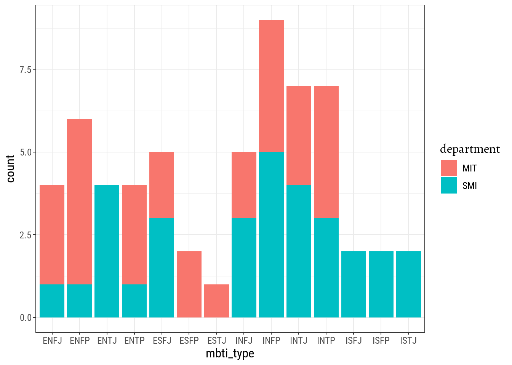
MypanelE2Mod |>gf_bar(~`social_orientation`, fill =~department, position ="dodge")
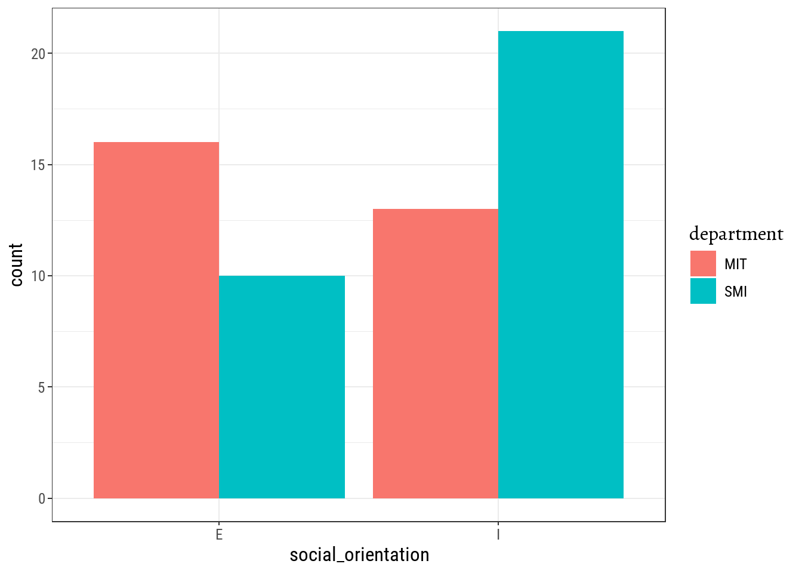
Conclusion
After analysis of the data, we were able to find out that SMI students are, on average, more introverted than MIT students.
Panel E.3
Belief in AI, Art VS Design
1. See the table
MypanelE3Data <-read_csv( "Panel-E.3.csv")
Rows: 60 Columns: 4
── Column specification ────────────────────────────────────────────────────────
Delimiter: ","
chr (3): gender, program, AI_belief
dbl (1): count
ℹ Use `spec()` to retrieve the full column specification for this data.
ℹ Specify the column types or set `show_col_types = FALSE` to quiet this message.
categorical variables:
name class levels n missing
1 gender character 2 60 0
2 program character 2 60 0
3 AI_belief character 2 60 0
distribution
1 boy (50%), girl (50%)
2 art (50%), design (50%)
3 no (53.3%), yes (46.7%)
quantitative variables:
name class min Q1 median Q3 max mean sd n missing
1 count numeric 1 15.75 30.5 45.25 60 30.5 17.46425 60 0
skim(MypanelE3Data)
Data summary
Name
MypanelE3Data
Number of rows
60
Number of columns
4
_______________________
Column type frequency:
character
3
numeric
1
________________________
Group variables
None
Variable type: character
skim_variable
n_missing
complete_rate
min
max
empty
n_unique
whitespace
gender
0
1
3
4
0
2
0
program
0
1
3
6
0
2
0
AI_belief
0
1
2
3
0
2
0
Variable type: numeric
skim_variable
n_missing
complete_rate
mean
sd
p0
p25
p50
p75
p100
hist
count
0
1
30.5
17.46
1
15.75
30.5
45.25
60
▇▇▇▇▇
MypanelE3Mod <- MypanelE3Data |> dplyr::mutate(gender =as.factor(gender), program =as.factor(program),AI_belief =as.factor(AI_belief))glimpse(MypanelE3Mod)
vcd::mosaic(~ gender + AI_belief, data = MypanelE3Mod)
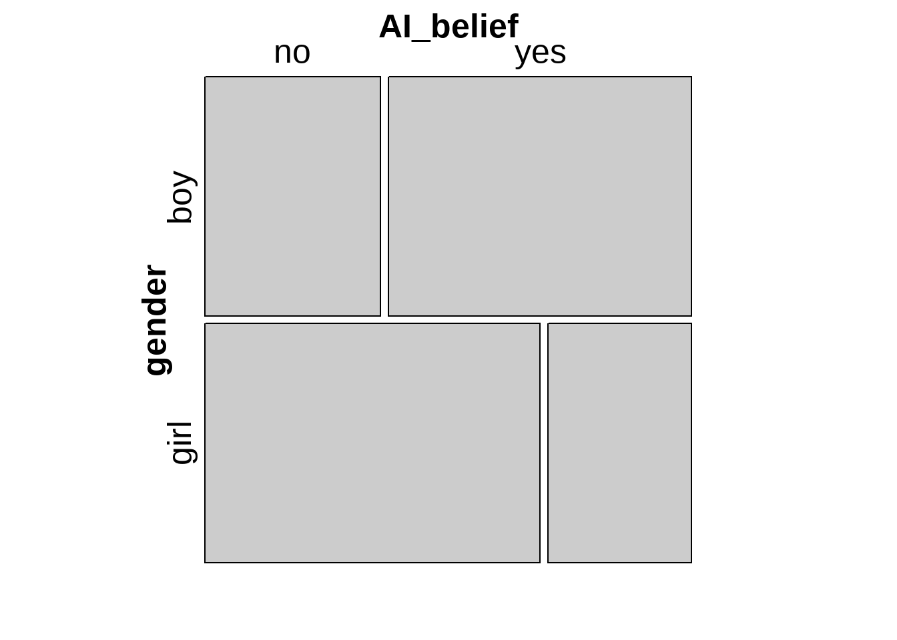
###conclusion The analysis explored whether boys are more likely than girls to believe in AI. The mosaic plot suggests that a higher proportion of boys believe in AI compared to girls in this sample of 60 respondents. This indicates a possible association between gender and AI belief. However, the findings are limited to the respondents included in this dataset and cannot necessarily be generalised to a larger population.
Panel E.4
Do girls have a higher monthly allowance than guys?
1. See the table
MypanelE4Data <-read_csv( "Panel-E.4.csv")
Rows: 60 Columns: 3
── Column specification ────────────────────────────────────────────────────────
Delimiter: ","
chr (1): gender
dbl (2): respondent, allowance
ℹ Use `spec()` to retrieve the full column specification for this data.
ℹ Specify the column types or set `show_col_types = FALSE` to quiet this message.
categorical variables:
name class levels n missing
1 gender character 2 60 0
distribution
1 F (50%), M (50%)
quantitative variables:
name class min Q1 median Q3 max mean sd n missing
1 respondent numeric 1 15.75 30.5 45.250 60 30.500 17.464249 60 0
2 allowance numeric 1 4.00 5.0 7.125 40 6.225 5.259717 60 0
Rows: 60
Columns: 3
$ respondent <dbl> 1, 2, 3, 4, 5, 6, 7, 8, 9, 10, 11, 12, 13, 14, 15, 16, 17, …
$ gender <fct> M, M, M, M, M, M, M, M, M, M, M, M, M, M, M, M, M, M, M, M,…
$ allowance <dbl> 5.0, 5.0, 5.0, 12.5, 10.0, 7.0, 5.0, 4.0, 13.0, 5.0, 4.0, 3…
mosaic::t.test(allowance ~ gender, data = MypanelE4Mod)
Welch Two Sample t-test
data: allowance by gender
t = 0.69647, df = 40.296, p-value = 0.4901
alternative hypothesis: true difference in means between group F and group M is not equal to 0
95 percent confidence interval:
-1.806154 3.706154
sample estimates:
mean in group F mean in group M
6.70 5.75
names( MypanelE4Mod)
[1] "respondent" "gender" "allowance"
MypanelE4Mod |>gf_density(~ allowance, fill =~gender)
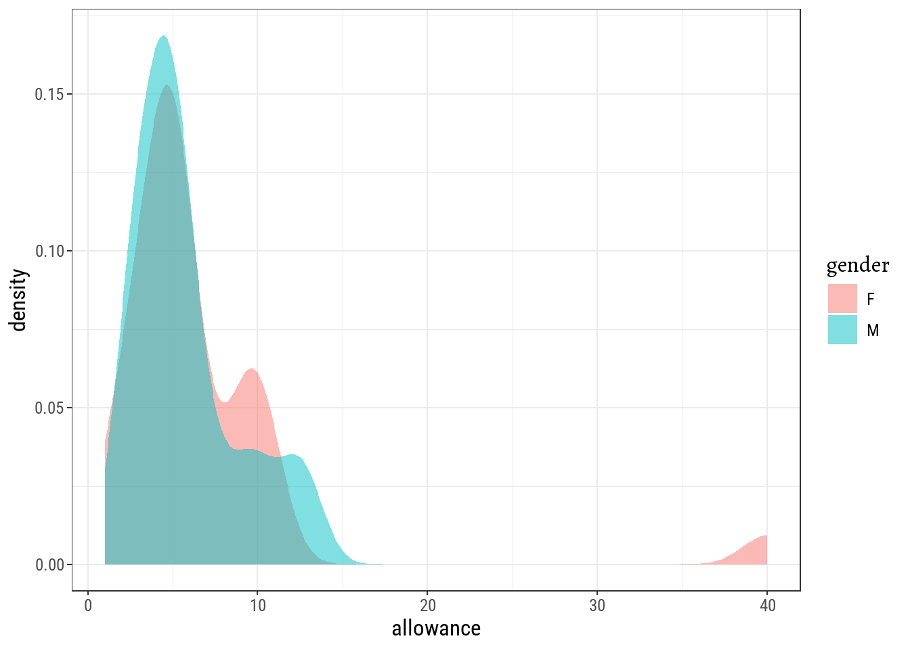
Conclusion
According to the T.test, the p value is 0.49 which is much higher than 0.05. Which means that being a boy or a girl has no affect on monthly allowance which is really nice in because equality.
Panel E.5
Some peasants get into a relationship easier than normies?
1. See the table
MypanelE5Data <-read_csv( "FOSEDA Panel E data - Some Peasants Make Friends Easier.csv")
Rows: 60 Columns: 3
── Column specification ────────────────────────────────────────────────────────
Delimiter: ","
chr (2): department, relationship_status
dbl (1): respondants
ℹ Use `spec()` to retrieve the full column specification for this data.
ℹ Specify the column types or set `show_col_types = FALSE` to quiet this message.
categorical variables:
name class levels n missing
1 department character 2 60 0
2 relationship_status character 2 60 0
distribution
1 MIT (50%), SMI (50%)
2 No (58.3%), Yes (41.7%)
quantitative variables:
name class min Q1 median Q3 max mean sd n missing
1 respondants numeric 1 15.75 30.5 45.25 60 30.5 17.46425 60 0
vcd::structable(relationship_status ~ department, data = MypanelE5Data) |> vcd::mosaic(shade =TRUE, gp = shading_Friendly, type ="expected")
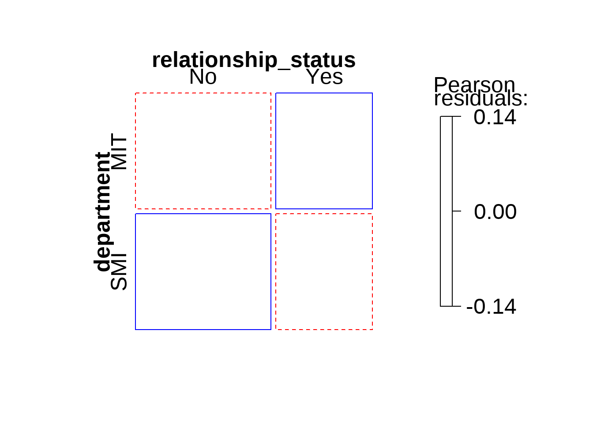
Conclusion
Our investigation showed that the difference in relationship status between SMI and MIT respondents was small. The chi-square test did not provide sufficient evidence of an association between the two variables. This taught us that our initial hunches do not always match what the data reveals. We also realised that relationship status alone cannot explain how easy or difficult it is to get into a relationship. Ultimately, this exercise helped us understand the importance of questioning our assumptions and interpreting data carefully.
Panel E.6
Do tatoos make a person look more attractive?
1. See the table
MypanelE6Data <-read_csv( "Panel-E.6.csv")
Rows: 60 Columns: 4
── Column specification ────────────────────────────────────────────────────────
Delimiter: ","
chr (3): gender, has_tattoos?, opinion
dbl (1): respondents
ℹ Use `spec()` to retrieve the full column specification for this data.
ℹ Specify the column types or set `show_col_types = FALSE` to quiet this message.
categorical variables:
name class levels n missing
1 gender character 2 60 0
2 has_tattoos? character 2 60 0
3 opinion character 2 60 0
distribution
1 F (50%), M (50%)
2 no (50%), yes (50%)
3 yes (68.3%), no (31.7%)
quantitative variables:
name class min Q1 median Q3 max mean sd n missing
1 respondents numeric 1 15.75 30.5 45.25 60 30.5 17.46425 60 0
Rows: 60
Columns: 4
$ respondents <dbl> 1, 2, 3, 4, 5, 6, 7, 8, 9, 10, 11, 12, 13, 14, 15, 16, …
$ gender <fct> M, M, M, M, M, M, M, M, M, M, M, M, M, M, M, M, M, M, M…
$ `has_tattoos?` <fct> yes, no, yes, no, no, yes, no, yes, no, yes, no, yes, n…
$ opinion <fct> yes, yes, no, yes, no, yes, yes, yes, no, yes, yes, no,…
mosaic::xchisq.test(`has_tattoos?`~ gender, data = MypanelE6Mod)
MypanelE6Mod |> ggformula::gf_bar( ~`has_tattoos?`, fill =~gender, position ="dodge" )
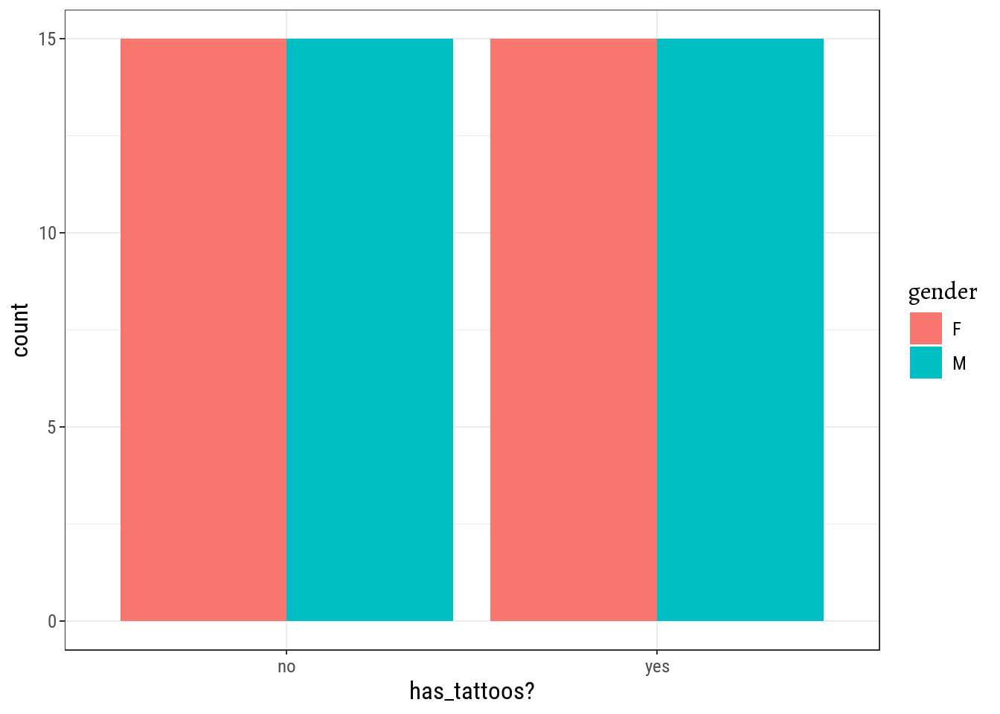
###Conclusion
After analysing the data, we found that men and women in this sample were equally likely to report having tattoos. Out of the 30 men, 15 reported having tattoos, and out of the 30 women, 15 reported having tattoos. This means that 50% of each group reported having tattoos.
The chi-square test can be used to assess whether there is an association between gender and tattoo status. The results do not indicate a difference between the two groups in this sample. However, this does not establish that men and women are equally likely to have tattoos in the wider population. The dataset contains only 60 respondents, so the findings should be interpreted within that limitation.